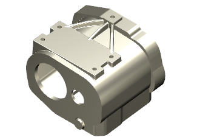
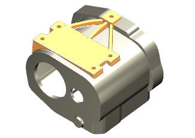
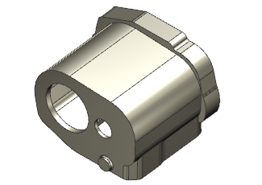
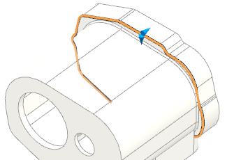
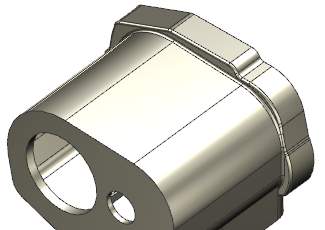

添加倒圆角特征
-
打开 wav3_120173。

需要将倒圆角特征添加到模型的特征历史记录中如图所示的部件模块之前。

-
确保未选中工具→更新→部件间更新→延迟几何体、表达式和 PMI 选项。
-
在部件导航器中，右击拉伸 (34)并选择设为当前特征。

-
在如图所示的内侧边上添加一个 2 mm 半径的倒圆角。

-
在如图所示的外侧边上添加一个 2 mm 半径的倒圆角。


-
在部件导航器中，将历史记录树中的最后一个特征设为当前特征。
信息窗口将显示更新警告和失败报告，很多特征由于这两个额外倒圆角的添加而被抑制。